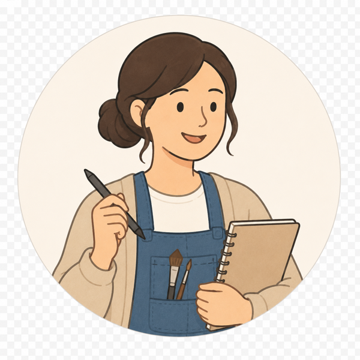

SCENE 01·CASE STUDY·2026
ArtFac — Designing trust in custom artwork commissions
ArtFac turns custom artwork commissions into a visible workflow: request details, agreed scope, project stage, payment timing, and revision actions become easier for clients and artists to understand.
ROLE
UX Designer / UI Designer
Group mid-fi concept co-designed; individual high-fidelity refinement by Boyi across UI components, interaction states, and milestone-based commission flow.
TIMELINE
2026.02 - 2026.04 · 8 weeks
Academic project completed across February-April 2026.
TEAM
Group project foundation
Collaborative concept foundation, followed by Boyi's individual high-fidelity Figma refinement.
SCOPE
Research · flows · mid-fi · hi-fi prototype
Flow mapping, IA, design system, hi-fi Figma prototype, and moderated / think-aloud usability testing with 5 participants. Boyi conducted 3 sessions.

ROLL SCENE 01 · ARTFAC
TRY THE PROTOTYPE
Click through the ArtFac mobile flow
Use the embedded Figma prototype to click through the client-side journey from artist discovery to commission creation and project tracking.
FLOW FOCUS
Artist discovery
Commission creation
Project tracking
COLD OPEN
TC 00:00
PROBLEM
Commissioning artwork requires trust before the final work exists. Clients need confidence before paying, while artists need enough structure to protect their time, scope, and creative labor.
DIRECTION
How might a commission interface make scope, payment timing, revision boundaries, and next steps visible enough for clients and artists to trust the process?
CHALLENGE
The same transaction creates different risks: clients need clarity before committing money, while artists need clear briefs, payment confidence, and boundaries around revision.
SOLUTION
The redesign makes trust part of the workflow: guided request creation, shared project status, milestone-based payment, clearer revision moments, and visible delivery expectations.
The group mid-fi prototype established the core commission journey. My individual redesign clarified payment visibility, workflow transparency, interaction hierarchy, and the final mobile UI system.

SHOT 0A · WIREFRAMES
Problem flow snapshot — request details, project setup, milestone payment, draft review, revision, and delivery.

SHOT 0B · FULL FLOW
Full mobile flow board showing discovery, commission creation, payment stages, revision decisions, delivery, and review states.
THE CAST
TC 00:41

Artist / CreatorTHE ARTIST SIDE
Working assumption: artists need enough detail to price the work, protect their time, and avoid repeated negotiation after the commission starts.
Needs:
Clear request details before accepting work
Payment confidence and visible stage expectations
Revision boundaries that reduce repeated communication
Clear request details before accepting work
Payment confidence and visible stage expectations
Revision boundaries that reduce repeated communication
Client / CommissionerTHE CLIENT SIDE
The client side needs confidence before paying: what details to provide, where the commission sits in the process, and how to request edits without turning feedback into an awkward conversation.
Needs:
Understand what details the artist needs
Know the current project stage and next action
Understand payment timing and revision options
Understand what details the artist needs
Know the current project stage and next action
Understand payment timing and revision options
HIGHLIGHTS — THE PAYOFF, UP FRONT
TC 01:10
The final design is framed as UX decision-making, not product marketing. Each highlight connects a user risk to the interface change that reduces it.
HL 01
Request clarity before agreement
Vague DM-style negotiation makes it hard for clients to describe a creative idea and hard for artists to judge scope. The request flow turns that ambiguity into structured inputs: description, references, budget range, timeline, and preview before submission.

HL 01 · REQUEST
Structured fields replace vague DM-style negotiation with a clearer commission request.

HL 02 · PROGRESS
Payment is shown as part of the project stage, not as an isolated checkout moment.
HL 02
Shared project status
Once a commission starts, the trust question shifts from "Can I trust this artist?" to "What is happening now?" The My Commission and Project Details flow keeps current stage, next step, and payment status visible as a shared reference point.
HL 03
Boundaries for payment, revisions, and delivery
Payment, revision, and delivery are the moments where collaboration can become uncomfortable. The redesign ties payment summary, Request Edit, draft review, and final delivery to visible project stages so users can see what they are approving, paying for, or sending back for changes.

HL 03 · TRUST SIGNALS
Recommended artists and commission context make trust signals visible before commitment.
ACT I — OBSERVE
TC 02:04
I used the early phase as directional evidence: competitor analysis, peer critique, instructor feedback, project assumptions, and moderated / think-aloud testing helped locate where trust breaks in the commission workflow.
5
moderated / think-aloud testing participants; Boyi conducted 3 sessions
INSIGHT 01 — TRUST BREAKS BEFORE DELIVERY
Clients do not only worry at the final payment screen. The uncertainty can start earlier, when they cannot tell what is happening, what is expected next, or whether silence is normal.
INSIGHT 02 — ARTISTS NEED BOUNDARIES, NOT ONLY EXPOSURE
For artists, the product problem is not only exposure. It is also protecting creative labor: understanding the brief, setting scope, making payment feel normal, and avoiding endless revision loops.
INSIGHT 03 — TRUST NEEDS PROCESS VISIBILITY
A marketplace profile can create first-contact trust, but a commission needs ongoing trust after the request is accepted. Status, milestones, and check-ins turn the relationship into a visible process.
ACT II — MAP
TC 03:20
Trust is not one screen. It is a sequence of small confirmations: what was requested, what was agreed, what stage the work is in, what can be revised, and what happens at delivery.
THE COMMISSION FLOW — THREE TAKES
The core flow evolved from a rough commission journey into a readable payment-and-progress system.
Discovery
Request
Milestone payment
Project tracking
Group idea / early flow
The early direction mapped how a client could discover an artist, describe a commission, and move toward an agreement.
EARLY FLOW
→
Group mid-fi
The group prototype established commission setup and milestone-based collaboration, but payment visibility and action hierarchy still needed refinement.

MID-FI SCREEN
→
Individual hi-fi refinement
My refinement clarified UI components, interaction states, payment timing, project tracking, and feedback actions across the client-side flow.
FINAL FLOW
ACT III — RESOLVE
TC 04:35
RESHOOTS — TESTING EVIDENCE BOARD
Testing converted vague trust issues into concrete interface changes
Instead of a wall of notes, this board makes the logic visible: what participants struggled with, what changed in the interface, and how the final flow answers the problem.
5
testing participants
3
interviews by Boyi
3
iteration priorities
1Payment transparency
“I am not sure if I pay every time or how it works.”
→ INTERFACE CHANGE
Payment amount moved into the stage CTA and tied to the current milestone.
2Information hierarchy
Users skipped banners and missed important details during tasks.
→ INTERFACE CHANGE
Primary action, supporting explanation, and secondary options are grouped together.
3System visibility
Users could complete tasks but did not know what happens next.
→ INTERFACE CHANGE
Timeline makes the current stage visible and locks future states until ready.
BEFORE / AFTER PROOF — PAYMENT AS A DECISION POINT
The final hi-fi refinement does not add decoration; it makes payment, next action, and status legible at the moment users decide.
BEFORE
Character Illustration
By David King
FormatDigital Painting
Artwork SizeMedium · 3000 × 3000 px
✓ Step1
● Step2
○ Step3
○ Step4
Payment existed, but it read like static information rather than a clear decision point.
→
AFTER
Current
Commission
Commission
TOTAL COMMITTED
Pending
2 people have accepted the order
Project ProgressionStage 1 of 4
💳 Next Stage Payment$24.00
Start Date: 2026. 04. 02
Payment is now connected to milestone state, amount, and the next action.
PROJECT PROGRESS · CHARACTER ILLUSTRATION
Stage 3 of 4$24.00 · current stage
✓
Establish Cooperation
Both sides confirm scope, timeline, and terms
✓
View Draft
Artist submits the first draft for review
●
Project Milestones CURRENT
Track progress and stage updates
🔒
Final Work
Receive final artwork · unlocks after milestones complete
01Clarify action meaning
Differentiate approve, edit, pay, and continue states.
02Expose system logic
Show stage, locked states, and what happens next.
03Reduce decision anxiety
Pair cost with context, not only checkout UI.
FINAL FRAME
TC 05:52
"The awkward trust problem did not disappear. It became a sequence of screens where both sides could see what was requested, what was agreed, and what should happen next."
The final story moves from vague commission negotiation to a visible workflow: clearer request creation, milestone payment, project tracking, structured revision, final delivery, and stronger artist credibility signals.
FLOWS CLARIFIED
Request→Agreement→Progress→Revision→Delivery
Each hand-off in the commission became a visible, confirmable step.
PROCESS
Group mid-fi→Individual low-fi→Hi-fi refinement
From shared concept to individual high-fidelity Figma refinement.
RESHOOT NOTES — WHAT I'D DO DIFFERENTLY
Next, I would test the artist-side workflow, milestone payment comprehension, revision limit expectations, chat vs. structured feedback, and cancellation / refund / dispute flows with real clients and artists.
CUT TO: SCENE 02
LinkLog — Follow-up workflow for social prescribing teams →
Opening problem: care work has a memory problem.

Observe like a documentarian × Map like a systems thinker × Deliver like a UX designer
© 2026 Boyi Tan
Roll credits: About · Resume · boyitan0011@gmail.com · LinkedIn